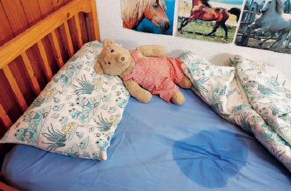
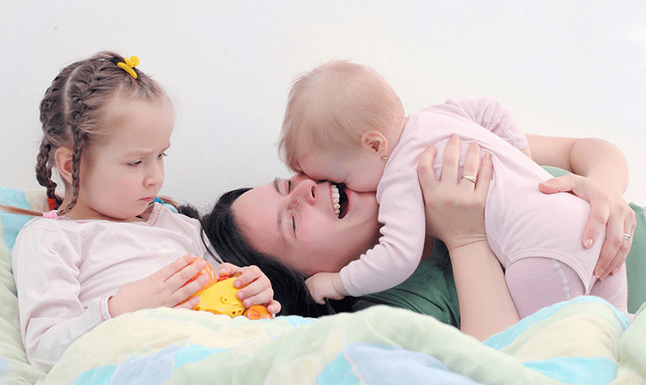
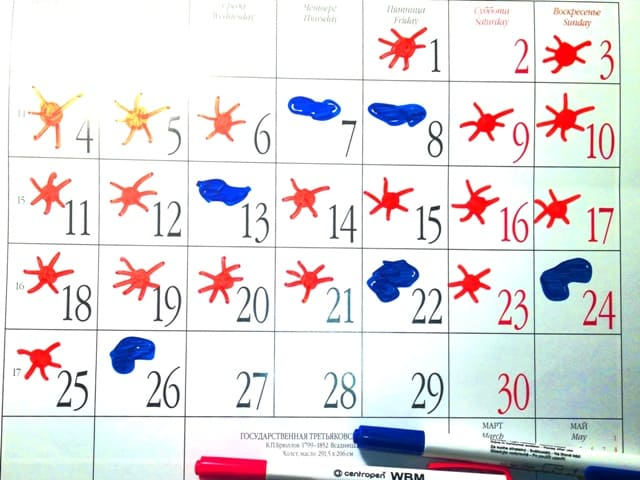
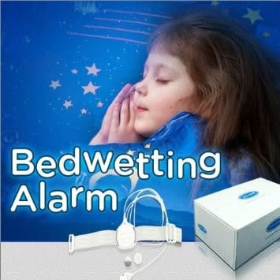

НЕДЕРЖАНИЕ МОЧИ: ПОЧЕМУ ЭТО ПРОИСХОДИТ
Недержание мочи (энурез) – частая проблема у детей. В возрасте пяти лет около 15 % детей не всегда удерживают мочу. Большинство этих детей имеет изолированное или моносимптоматическое недержание мочи – ночной энурез. Моносимптоматический ночной энурез делится на первичную и вторичную формы.

Первичной называют форму энуреза, при которой ребенок не имел ранее периода «сухих» ночей. Дети, у которых в анамнезе отмечен период «сухих» ночей, длившийся более шести месяцев, имеют форму, называемую вторичным энурезом.
Вторичный ночной энурез нередко связан со стрессовым фактором:
развод родителей,
рождение другого ребенка в семье,

смерть домашней собаки и т. д.
Однако точная причина развития вторичного энуреза остается неизвестной.
Первичный моносимптоматический ночной энурез имеет высокую частоту самопроизвольного излечения и обычно связан с одной или несколькими причинами:
• замедленное созревание мочевого пузыря;
• малая функциональная емкость мочевого пузыря;
• пониженное высвобождение вазопрессина (гормона, замедляющего отделение мочи);
• затрудненное пробуждение.
Лечение вторичного ночного энуреза включает обнаружение и, если это возможно, исключение основного стрессового фактора. Но часто при самом тщательном поиске не удается обнаружить причину вторичного энуреза, тогда лечить его следует так же, как и первичный.
Возраст, в котором недержание мочи начинает считаться проблемой, зависит от семьи. Если оба родителя мочили кровать ночью до старшего детского возраста, им не следует беспокоиться, если и их семилетний ребенок иногда делает это. Однако по отношению к четырехлетнему ребенку беспокойство может быть оправданно, если у него есть трехлетний брат, который уже спит «сухо».
Для самого ребенка энурез становится проблемой в относительно позднем детстве, когда увеличиваются контакты со сверстниками. Следует исходить из того, что большинство случаев энуреза проходят самостоятельно, без всякого лечения.
Родителям важно осознать, что эпизоды ночного недержания являются ненамеренными со стороны ребенка. Не менее четверти родителей наказывают ребенка за мокрую кровать, иногда это даже физическое наказание (побои), но это глупо и крайне несправедливо.
Если ребенку с энурезом требуется лечение, то оно состоит сразу из нескольких методов, применяющихся параллельно: мотивационная терапия, ограничение жидкости, «мочевая сигнализация» и др.
Лечение может оказаться длительным, что связано с переменным успехом терапии. Родители должны иметь высокую мотивацию к лечению энуреза, обстановка в семье должна быть спокойной. Терапия должна быть целенаправленной, последовательной и длительной, иногда для достижения явных результатов требуются месяцы и годы.
Важно определить, является ли ребенок достаточно «зрелым», чтобы принять на себя ответственность за лечение. Лечение не следует начинать, если врач считает, что родители более заинтересованы в лечении, чем сам ребенок, или если ребенок не желает или не способен принять часть ответственности за программу лечения на себя. Ребенок должен быть достаточно сильно мотивирован, чтобы участвовать в лечении, которое может занять месяцы, – иначе это станет лишь бессмысленной пыткой.
Лечение ночного энуреза редко требуется детям ранее семилетнего возраста. Когда родители и ребенок мотивированы и заинтересованы в долгосрочной терапии, нефармакологические методы лечения (мотивационная терапия, тренировка мочевого пузыря, контроль потребляемой жидкости) обычно используют в течение первых трех – шести месяцев. Более активное вмешательство (терапия «мочевой сигнализацией», медикаментозное лечение) следует применять у старших детей, испытывающих социальные неудобства и ущерб чувству собственного достоинства. Лекарственные препараты могут быть полезны для краткосрочного эффекта (если ребенку требуется переночевать в гостях или при временном пребывании в лагере), но терапия «мочевой сигнализацией» является самой эффективной и имеющей долгосрочный эффект.
ДАВАЙТЕ РАССМОТРИМ ОСНОВНЫЕ МЕТОДЫ ЛЕЧЕНИЯ ЭНУРЕЗА:
1) Мотивационная терапия. С ребенком заключается соглашение, по которому он будет получать гарантированные привилегии (подарок, поход в цирк, путешествие и т. д.) за определенное количество «сухих» ночей, например 14 подряд. Ведется дневник «сухих» ночей, после «срыва» счет обнуляется. Мотивационная терапия помогает ребенку настроиться на другие, малоприятные способы контроля энуреза.

2) Тренировка мочевого пузыря. У большинства детей с ночным энурезом снижен объем мочевого пузыря. Таким пациентам для увеличения объема мочевого пузыря можно использовать тренировку с целенаправленной задержкой мочи, если врач не видит к ней противопоказаний.
Смысл такой тренировки в том, чтобы ребенок после первого ощущения позыва к мочеиспусканию последовательно задерживал мочу на все более длительные промежутки времени (максимально долго). Для оценки эффективности метода объем выделяемой мочи следует фиксировать раз в неделю в дневнике. Цель заключается в достижении желаемого расчетного объема, нормального для данного возраста.
3) Ограничение потребляемой жидкости перед сном
За 3–4 часа до сна ребенку следует ограничить (лучше полностью исключить) прием жидкости. Если ребенок привык много пить именно вечером, то нужно постепенно менять эту привычку, смещая основное потребление жидкости на утро и день. Некоторые специалисты рекомендуют, чтобы пациенты потребляли 40 % суточного объема утром (с 7 до 12 часов), 40 % днем (с 12 до 17) и только 20 % вечером (после 17 часов), причем напитки, потребляемые в вечерние часы, не должны содержать кофеин (он усиливает выделение мочи).
Такая схема принципиально отличается от обычно практикуемого родителями полного запрета на питье в вечерние часы для предотвращения энуреза. Полное ограничение вечернего и ночного питья без компенсации в утренние и дневные часы может быть вредным для ребенка и обычно не достигает желаемой цели. Напротив, предложенная программа потребления жидкости разрешает пить ребенку сколько угодно в течение дня. Достаточное получение жидкости утром и днем уменьшает потребность ребенка в жидкости в вечерние часы. Кроме того, это увеличивает дневной объем мочи и может способствовать тренировке мочевого пузыря.
4) Метод «мочевой сигнализации»
Данный метод является самым эффективным в лечении ночного энуреза, но имеет и свои недостатки.
Для этого метода используется специальный прибор, состоящий из небольшого корпуса и датчика намокания, который подключен к корпусу через провод. Датчик подкладывают под ягодицы ребенка, и при намокании включается звуковой и вибрационный сигнал, который будит ребенка и родителей.
Метод работает через создание условного рефлекса: пациент учится или просыпаться для опорожнения мочевого пузыря ночью, или задерживать мочеиспускание в ночные часы. Если ребенок не просыпается от сигнала, родители должны будить его каждый раз, когда звучит сигнал.
Очень важно, чтобы ребенок сам отвечал за установку сигнального устройства. Каждую ночь перед сном он лично должен проверить устройство, а если ночью оно сработает, то он должен встать, выключить его, опорожнить мочевой пузырь в туалете до конца, перестелить свою постель чистым бельем, сменить нательное белье и снова лечь спать. Для этого чистое постельное и нательное белье должно быть заранее приготовлено у кровати. При необходимости родители могут помочь ребенку с заменой постельного белья, но не делать это за него.

Ребенок должен вести дневник «сухих» и «влажных» ночей. Система поощрений успехов ребенка должна применяться так же, как описано ранее.
От устройства можно отказаться после того, как оно не сработает больше месяца подряд. Обычно для этого требуется около 4 месяцев сна с устройством. При необходимости, если более двух эпизодов ночного энуреза повторится в течение двух недель, терапию «мочевой сигнализацией» можно начать заново.
Следует отметить, что приблизительно 30 % семей прерывают терапию «мочевой сигнализацией» по разным причинам, например из-за раздражения кожи ребенка, создания неудобств другим членам семьи, отказа родителей вставать к ребенку ночью и др.
Дети, которые из-за учащения эпизодов энуреза после окончания терапии «мочевой сигнализацией» вынуждены вновь прибегнуть к использованию устройства, имеют гораздо более высокие показатели эффективности благодаря начальному эффекту, созданному первым курсом.
5) Метод будильника
Если ребенок обычно мочит кровать в два часа ночи, то в час ночи целесообразно заводить ему будильник, чтобы он вставал в туалет. Может показаться, что этот метод только затягивает выздоровление от энуреза, но данные исследований говорят об обратном.
6) Медикаментозное лечение энуреза
Существуют препараты десмопрессина – синтетические аналоги антидиуретического гормона. Эти препараты, через ряд механизмов, уменьшают выработку мочи на несколько часов после введения. Принимаются в виде таблеток.
ВАЖНО!
Во время приема препаратов десмопрессина ребенок непременно должен ограничивать прием жидкости в вечерние часы.
Препараты десмопрессина нельзя назвать дешевыми, это ограничивает их применение. Кроме того, для их эффективности необходим достаточный объем мочевого пузыря, а значит назначать терапию десмопрессином лучше после нескольких месяцев упражнений по увеличению емкости мочевого пузыря.
Если поездка запланирована, а проблема с ночным энурезом стоит остро, то родители должны обратиться к врачу (детскому урологу или педиатру) не менее чем за 6 недель, чтобы правильно подобрать нужную дозу и получить максимальный эффект.
Препарат нужно тщательно «титровать», то есть увеличивать дозу индивидуально, начиная с небольших и подбирая оптимальную для конкретного ребенка. Врач будет корректировать дозу примерно раз в 10 суток, полный подбор занимает около месяца.
В зарубежной литературе описаны также попытки лечить энурез трициклическими антидепрессантами, свечами с индометацином и т. д., но эффект довольно сомнительный, и в России эти методы не используются. В России часто используется терапия препаратом Дриптан, однако качественных исследований, подтверждающих эффективность такого подхода, почти нет.

Очень важно понимать, что препараты десмопрессина не излечивают энурез, они эффективны лишь тогда, когда ребенок их принимает, а после отмены энурез возвращается на прежний уровень. Поэтому использовать этот метод следует, только если у ребенка планируются ночевки вне дома, например поездка со сверстниками в оздоровительный лагерь на летних каникулах.
Побочные эффекты терапии десмопрессином при правильном применении довольно редки. Наиболее серьезным является дилатационная гипонатриемия, которая возникает, когда ребенок принимает много жидкости перед сном одновременно с десмопрессином. Поэтому ребенок должен принять за вечер не более 240 мл воды и не принимать жидкость ночью. Если же ребенок забылся или по объективным причинам выпил воды вечером более разрешенного объема (ОРВИ, кишечная инфекция…), то лечение десмопрессином необходимо прервать.
Итак, подведем итог:
✗ большинство случаев энуреза не требует никакой терапии в возрасте до 7 лет;
✗ ни один из доступных методов лечения не является самодостаточным, все они должны использоваться одновременно или в комбинациях;
✗ методы терапии довольно тяжелы для ребенка и семьи, и их недостатки следует обсудить с врачом до начала терапии, и еще раз обсудить, если терапия начата, но дается ребенку или членам семьи слишком тяжело;
✗ любая терапия должна начинаться с готовности ребенка участвовать в ней и осознания родителями того, что эпизоды энуреза являются полностью неосознанными и ненамеренными со стороны ребенка;
✗ лечение должно быть построено так, чтобы его потенциальный вред не превышал ожидаемой пользы.
(Сергей Бутрий "Здоровье ребенка: современный подход")